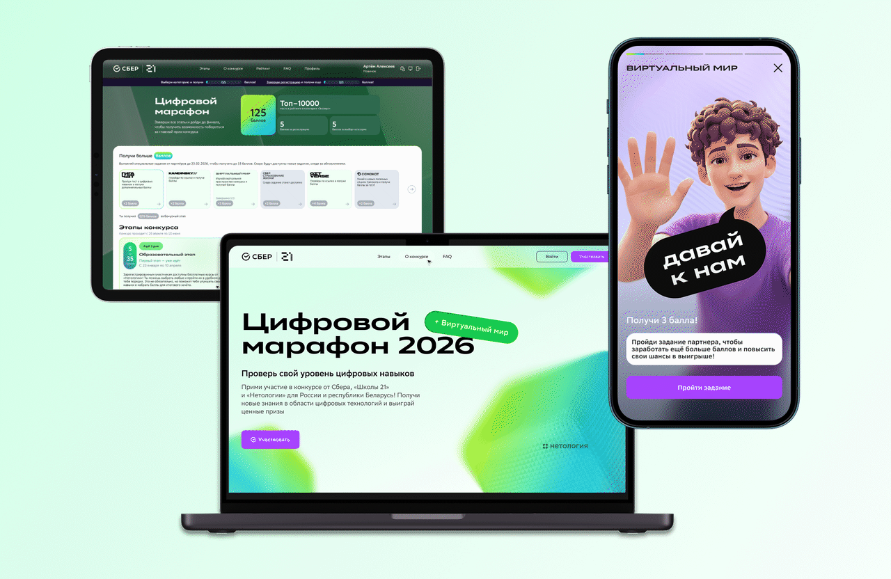
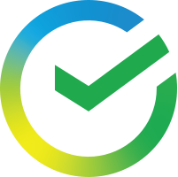
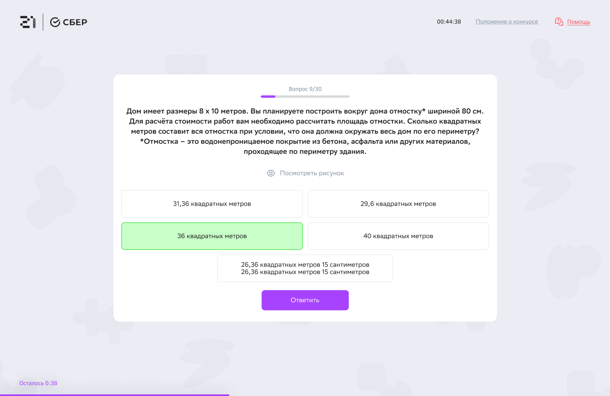
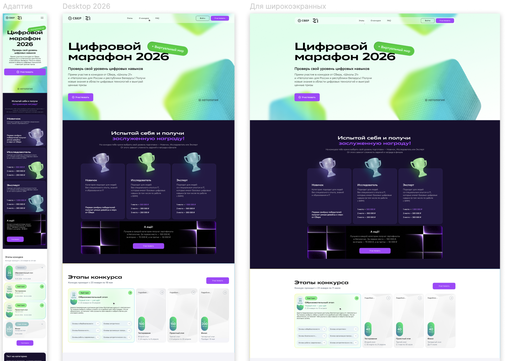

Загрузка изображения…

Цифровой марафон
Можно посмотреть
2026


Цифровой марафон
2026
- Контекст
«Цифровой марафон» — всероссийский конкурс по цифровым навыкам от Сбера, «Школы 21» и Нетологии. Участники выбирают один из трёх уровней, проходят бесплатные курсы, онлайн-тестирование и проектный этап, лучшие выходят в очный финал. Платформа состоит из лендинга с регистрацией, личного кабинета участника и модуля тестирования.
- Срок
- 10 месяцев (2025–2026)
- Результаты кратко
Конверсия из визита в регистрацию выросла с 10% до 20%.
Доля участников, проходящих этапы марафона до конца, выросла в 3 раза.
- Моя роль
Продуктовый дизайнер, провела редизайн в соответствии с новой дизайн-системой Сбера.
- Платформы
Задача
Перевести платформу на новую дизайн-систему Сбера и сделать регистрацию главным сценарием сайта: перестроить лендинг, изменить личный кабинет и ввести асинхронное тестирование. Регистрация открыта ограниченное время, поэтому каждый процент конверсии напрямую влияет на число участников марафона.
Шаг 1. Анализ
Перед проектированием разобрала воронку старого сайта: из визита в регистрацию доходили 10% посетителей, основная потеря была на лендинге, до кнопки регистрации доходила лишь часть посетителей. Это определило приоритет: сначала лендинг и flow регистрации, потом кабинет.
Перед началом работы я проанализировала прежнюю версию сайта и типичные сценарии пользователей, а также изучила гайдлайны новой дизайн-системы Сбера. Анализ показал три главные проблемы:
- Перегруженная главная. Лендинг был построен как страница о конкурсе, а не как путь к регистрации: описания этапов, призов и партнёров конкурировали друг с другом за внимание.
- Незаметная кнопка регистрации. Главное действие терялось среди контента, участнику приходилось искать, где зарегистрироваться.
- Разнобой в типографике. Лендинг, кабинет и тестирование выглядели как три разных продукта, стиль не соответствовал новой дизайн-системе Сбера и снижал доверие к платформе.
Шаг 2. Проектирование
Для каждого сценария сформулировала гипотезу и перевела её в макеты. Ниже — что хотела изменить в поведении участников и какие решения для этого спроектировала.
Гипотеза 01
Сделать регистрацию заметнее
Если показать кнопку регистрации на первом экране и оставить её доступной при прокрутке, больше посетителей перейдут к регистрации.
Решение. Вынесла кнопку на первый экран и закрепила её при прокрутке. Сократила описания уровней, этапов и призов: теперь они помогают выбрать категорию участия и решить, стоит ли регистрироваться.

Гипотеза 02
Показать прогресс и следующий шаг
Если участник видит свой прогресс и понимает, что делать дальше, ему проще пройти марафон до конца.
Решение. Объединила этапы в трек со сроками, статусами и ближайшим действием. Рядом вывела набранные баллы и место в рейтинге. В окне этапа показала, за какие задания начисляются баллы, а в профиле разделила поля на смысловые блоки.


Гипотеза 03
Дать повод вернуться в кабинет
Если между этапами можно заработать дополнительные баллы, у участника будет повод вернуться на платформу.
Решение. Добавила партнёрские Stories в раздел «Этапы»: участник открывает карточку, выполняет задание и получает баллы. Для мобильной версии отдельно проработала сценарии «Виртуальный мир» и «Самокат».

Гипотеза 04
Помочь участнику закончить тест
Если тест можно пройти в удобное время и не потерять ответы при обрыве связи, участнику будет проще завершить этап.
Решение. Спроектировала асинхронное тестирование: участник сам выбирает время в пределах этапа. На экране оставила один вопрос, прогресс и таймер; ответы сохраняются по ходу теста.

Единый интерфейс на трёх устройствах
Собрала лендинг, кабинет и тестирование на едином UI-kit Сбера. Для телефона проработала регистрацию и тестирование как сценарии для одной руки. Макеты для компьютера, планшета и телефона согласовала с бренд-командой.

Шаг 3. Исследования
- Методы
- Анализ воронки и пользовательских сценариев, коридорное тестирование, A/B-тесты.
- Выборка
- Для A/B-тестов — посетители сайта во время регистрационной кампании. Старая и новая версии показывались в равных долях — 50/50.
Сравнивали две метрики: конверсию из визита в регистрацию и долю участников, которые прошли этапы марафона до конца. Эти показатели отражают эффект редизайна в целом.
Результат
Провела редизайн платформы всероссийского конкурса в новой дизайн-системе Сбера: лендинг, личный кабинет с треком этапов, статистикой и Stories партнёров, асинхронное тестирование и адаптивы для трёх типов устройств на едином UI-kit.
- Конверсия из визита в регистрацию выросла с 10% до 20%: исправленный flow и лендинг, построенный вокруг регистрации, удвоили число участников с того же трафика.
- Доля участников, проходящих этапы марафона до конца, выросла в 3 раза: трек этапов, статистика с баллами и местом в категории и Stories партнёров дали причину возвращаться в кабинет.
- Макеты приняты бренд-командой Сбера без правок, запуск состоялся в срок к старту марафона.
Проект показал мне, как работать в рамках жёсткой дизайн-системы и при этом находить выразительные решения.